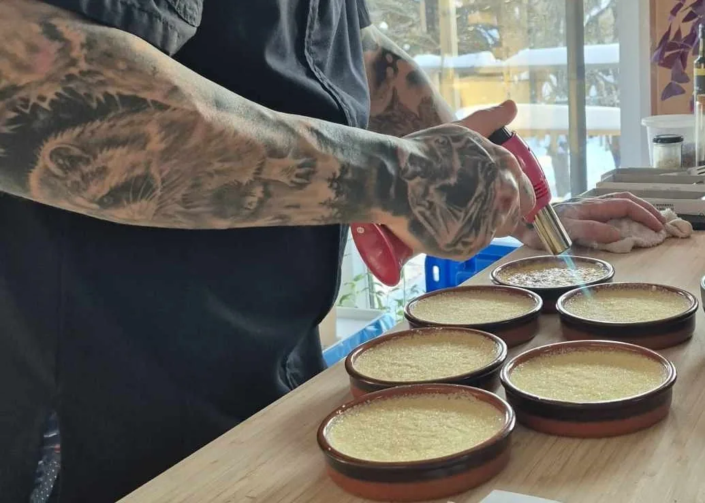

Comment ça marche
De la réservation
au dernier service.
Trois étapes simples
Le chef s'occupe de tout le repas. Vous n'avez qu'à recevoir vos invités.
01
Prise de contact
Décrivez l'occasion, le nombre de convives et vos dates par le formulaire de contact.
- 4 à 5 semaines d'avance
- Particuliers et entreprises
- Région de Montmagny, Québec, Lévis et environs
02
Menu sur mesure
Le chef vous propose un menu, puis l'ajuste à vos goûts et à vos allergies.
- 4 services, de 8 à 16 convives
- Bouchées jusqu'à 40 personnes
- À partir de 85 $ par personne
03
Le jour J
Le chef arrive avec tout son matériel, cuisine chez vous et présente chaque plat à table.
- Arrivée une heure avant le repas
- Environ trois heures chez vous
- Il repart avec sa vaisselle
Questions fréquentes
Tout savoir avant votre soirée
Réserver
Idéalement quatre à cinq semaines. L'été, le calendrier se remplit un mois à l'avance.
Un souper entre amis ou en couple, un anniversaire, un souper au chalet, un enterrement de vie de garçon ou de fille, un mariage intime, un party de bureau ou le temps des Fêtes : le chef reçoit les particuliers comme les entreprises. Le repas en quatre services se sert de 8 à 16 convives ; au-delà, jusqu'à environ 40 personnes, il propose des bouchées, façon menu dégustation.
Un traiteur livre des plats. Le chef, lui, cuisine chez vous et sert chaque service à votre table, en vous racontant les plats et les produits du territoire.
La soirée
De votre cuisinière pour cuire et réchauffer, et d'un peu d'espace de travail. Il apporte ses chaudrons, ses ustensiles, ses planches à découper et sa vaisselle.
La table et l'espace où vous mangerez, ainsi que l'eau et les boissons. Le chef s'occupe de toute la partie nourriture.
Le chef arrive environ une heure avant le repas pour s'installer. Le repas lui-même dure environ deux heures : comptez environ trois heures de présence chez vous.
Prix et paiement
Le repas en quatre services est offert à partir de 85 $ par personne, frais de déplacement en sus. Le prix exact se confirme avec le chef : il varie selon le nombre de convives, le nombre de services et la formule (repas ou bouchées).
Après la soirée, sans acompte. Le chef confirme le nombre de convives deux ou trois jours avant : c'est ce nombre qui est facturé, puisque les produits sont achetés en conséquence.
Prêt à réserver votre soirée ?
Écrivez au chef pour discuter de votre événement et de votre menu.
Réserver une soirée →